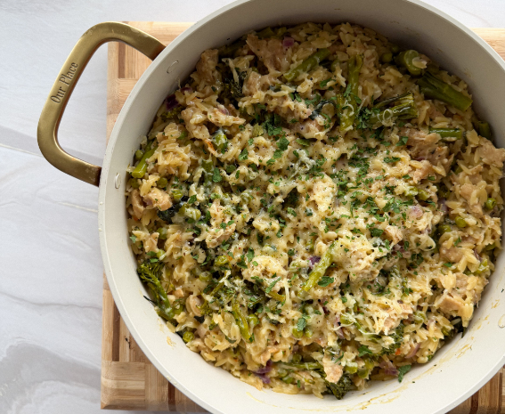

| Calories | Protein | Carbs | Fat | Fiber | Servings |
|---|---|---|---|---|---|
| 8 |
Prepare veggies; dice onion, cut up broccoli. Then cook the onion. I had to use two bigger pans for this quantity. Could also split the recipe in half, but eh, meal prep.
Add the beef, brown, drain excess fat, then add garlic and cook another 30 seconds or so.
Add veggies (broccoli, peas, edamame), orzo, and stock. May want to reduce heat a little. Cook, covered, for around 20 minutes, stirring occasionally.
Set heat to low. Add cream, yogurt, dijon, stir. Then add cheese, stir. Finally lemon juice, stir.
Babe on a Budget Creamy Sausage One Port Orzo, but heavily modified.